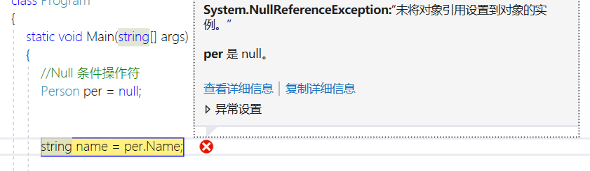
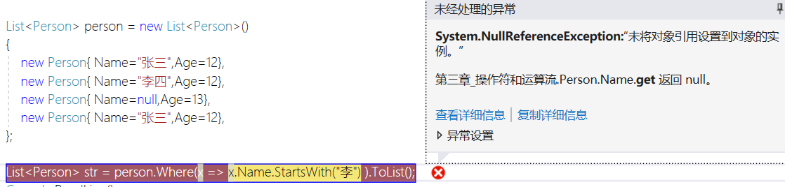
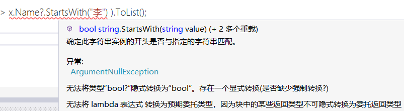
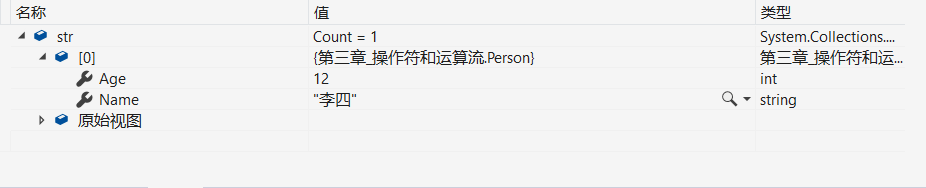
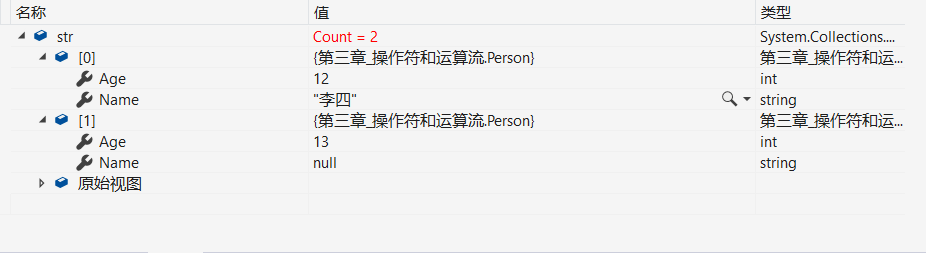

C#6.0新增的特性 NULL条件运算符 ?.
之前我们在需要判断某个对象是否为空的是这样的
Person per = null;
if (per != null)
{
Console.Write("");
}如果我们不这样判断的话,那么你就会得到一个 System.NullReferenceException 错误,

当然你也可以使用三元运算符
string str=person == null ? null :person.Name
但是在C#6.0的时候推出 NULL条件运算符,这样就使我们少写了很多代码,增加了我们很多的工作效率
?. NULL条件运算符
Person per = null;
string name = per?.Name;如果我们这样写的话,同样也可以判断是否为空,代替了if的判断和简化了三元运算符的操作
例子:
我们尝试一下,在一个集合中
List<Person> person = new List<Person>()
{
new Person{ Name="张三",Age=12},
new Person{ Name="李四",Age=12},
new Person{ Name=null,Age=13},
new Person{ Name="张三",Age=12},
};我们需要查找姓是李的人,如果我们不使用NULL条件运算符,结果是..

不出意料,因为Name中存在NUll值,所以得到了一个System.NullReferenceException
这次我们加上NULL条件运算符,结果...

加上NULL条件运算符之后,返回类型发生了改变,变成了Nullable<T>,如果我们还需要原来的类型,只需要和空运算符一起使用就可以了
因为返回的是bool类型,那我们看一下false返回的是什么

就会返回符合条件的值
如果为true又会返回什么呢

我们可以清晰的可以看到,为true的时候,不仅返回符合条件的数据,同时也返回了Name为空的值
?[
NULL运算符不但可以使用?.访问对象的属性和方法,还可以使用?[监测数组或包含索引器的对象是否为空
int[] are = new int[5] { 2, 3, 5, 7, 4 };
int? value = are?.Length;
int? result = are?[0];NULL条件运算符返回的类型是Nullable<T>,我们不想要这样的类型的话需要配合 ?? 空运算符使用
?? 空运算符
int[] are = new int[5] { 2, 3, 5, 7, 4 };
int value = are?.Length??0;
int result = are?[0]??0;